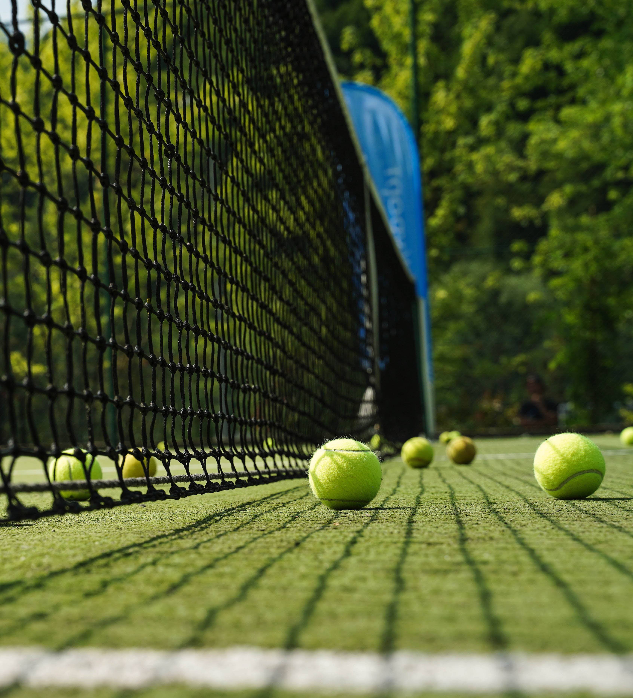
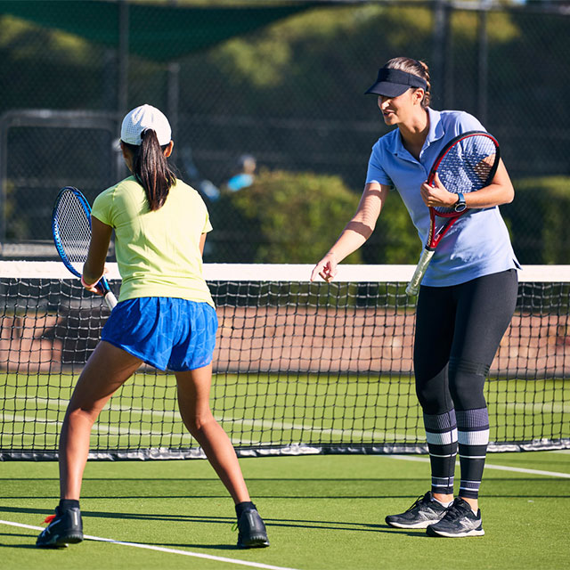

Информация о Теннис

Теннис — это индивидуальный или парный вид спорта, который играется на специальной площадке с помощью ракеток и мяча. Основной целью игры является отправить мяч через сетку на половину соперника таким образом, чтобы он не смог вернуть мяч обратно до приземления на своей половине поля. Теннис имеет долгую историю и является одним из самых популярных видов спорта во всем мире.
Вот основные аспекты тенниса:
Площадка:
Теннисная площадка имеет прямоугольную форму и разделена на две половины сеткой. На половине каждой стороны площадки находится пункт подачи (service box). Линии на площадке определяют границы игровой зоны.
Правила игры:
Игроки используют ракетки для ударов по мячу через сетку. Один удар приносит мяч на половину противника, где тот должен вернуть его обратно. Целью игрока является выиграть очко, заставив соперника не справиться с его ударом. Очки начисляются в соответствии с определенной системой, включая "15-30-40" и "деюс-аванс" (advantage).
Подача:
Игрок начинает каждый розыгрыш подачей мяча с пункта подачи. Подача должна пересечь сетку и попасть в пункт подачи соперника. Если подача совершена с ошибкой (например, мяч попал в сетку или за линию), то подача повторяется.
Удары:
В теннисе используются различные удары, такие как форхэнд (удар с передней стороны ракетки), бэкхэнд (удар с задней стороны ракетки), воллей (удар в воздухе близко к сетке) и подача (начальный удар в розыгрыше). Каждый из этих ударов требует особых технических навыков.
Очки и геймы:
Матч состоит из геймов, а геймы состоят из очков. Игрок, который выигрывает четыре очка и в то же время опережает соперника на два очка, выигрывает гейм. Победителем считается игрок, который первым выиграет установленное количество геймов (обычно это 6 геймов), а также победивший в последнем гейме "победный гейм" (сет).
Матчи и турниры:
Матчи могут состоять из одного сета (обычно до 6 или 8 геймов) или из нескольких сетов. В профессиональных турнирах обычно используется формат до двух или трех выигранных сетов. Самые престижные турниры в мире тенниса включают Открытый чемпионат Австралии, Уимблдон, Открытый чемпионат Франции и Открытый чемпионат США.
Теннис требует хорошей физической формы, выносливости, координации и тактической подготовки. Он может быть как профессиональным видом спорта, так и популярным развлечением для людей всех возрастов.
советы

Стать теннисистом требует усердной работы, постоянных тренировок и развития необходимых навыков. Вот некоторые шаги, которые могут помочь вам достичь этой цели:
Изучите основы:
Познакомьтесь с правилами, техниками ударов, подачей и другими основными аспектами тенниса. Это поможет вам понять игру и начать развивать свои навыки правильно.
v
Обучение у тренера:
Наймите квалифицированного тренера. Профессиональный наставник поможет вам освоить технику, корректировать ошибки и создать индивидуальную программу тренировок.
Регулярные тренировки:
Теннис требует постоянной практики. Уделяйте много времени тренировкам у стены, с партнером и на площадке. Работайте над улучшением своих ударов, координации и физической формы.
Участвуйте в соревнованиях:
Принимайте участие в местных турнирах и лигах, чтобы получить игровой опыт и оценить свой прогресс.
Физическая подготовка:
Теннис требует хорошей физической формы. Работайте над выносливостью, силой, гибкостью и скоростью. Кардиотренировки, силовые упражнения и растяжка могут быть важными компонентами вашей подготовки.
Тактика и стратегия:
Развивайте свои тактические навыки. Изучайте стиль игры соперников, научитесь адаптироваться к различным ситуациям на площадке и принимать правильные решения.
Партнерские тренировки:
Тренируйтесь с партнером, чтобы улучшать взаимодействие на площадке и развивать навыки игры в паре.
Психологическая подготовка:
Теннис также требует хорошей ментальной подготовки. Работайте над концентрацией, управлением стрессом и уверенностью в себе.
Профессиональные турниры:
Постепенно участвуйте в более крупных и профессиональных турнирах, чтобы получить больше опыта игры с более опытными соперниками.
Наставничество и опыт:
Учитеся от успешных теннисистов, анализируйте свои игры, видеозаписи матчей и постоянно стремитесь к улучшению.
Спонсорство и поддержка:
По мере развития своих навыков и достижения успехов, вы можете привлечь внимание спонсоров и поддержки, которые помогут вам финансово и организационно.
Постоянство и уверенность:
Путь к успеху в теннисе требует времени и упорства. Будьте готовы к трудностям, но не сдавайтесь и продолжайте развиваться.
Запомните, что стать профессиональным теннисистом требует больших усилий, но с любовью к игре и целеустремленностью вы можете добиться значительных результатов.